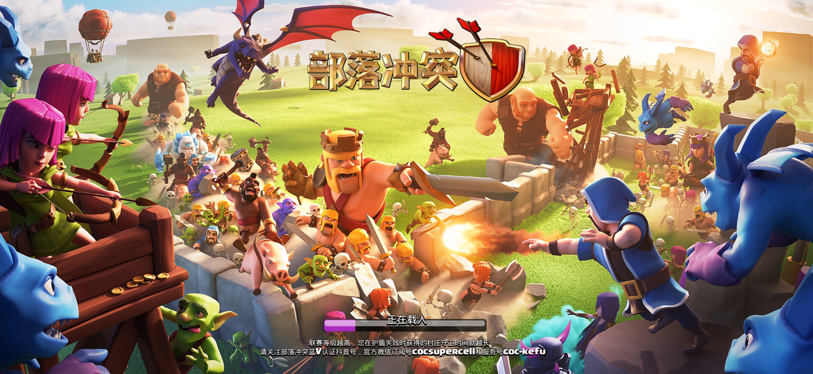

部落冲突规定

部落介绍：
本部落建于2017年5月11日，最初的成员为“黑暗佣兵团（部落标签：#20ULUJGQ）”来的，现在大部分成员是新人，原部落目前几乎是死鱼部落。如果有养老玩家，建议去那边
1.收人标准：
我们希望你是品德良好、乐于助人，积极捐兵、打部落竞赛、打部落战的活跃玩家。不要小学生，不要速本，不要僵尸，不要养老人员、逃战人员，不要长期不打部落战的人员，游戏昵称涉及政治色彩，涉黄的。
2.捐收兵要求：
日常捐收兵胖法球弓，胖球6级起捐，法师5级起捐（包含部落特权自动加的等级），弓手不限等级,禁止设置最高级；
如果在半小时内没人捐，默认塞满胖法球弓；
禁捐炸弹人，哥布林，除非本人请求。
七本及以上捐收比大于1:3 ，
七本以下不要求捐收比例，但是要有捐兵数量，零捐兵会被清理。
部落战收兵必须设置自己需要的兵种并设置最高级；
部落战期间，尤其是部落战收兵高峰期，非部落战请求援兵，禁止设置限制。对于挂机的成员，收兵时要标明挂机用，关掉自动捐兵（或者设置识别弓、随）。。
3.部落竞赛：
部落竞赛必须参加，每人最少打200分，结束前一小时会清理不足200分的最后两名。有事不能参加的向首领和副首领请假（在群里
艾特一下）
4.☆部落战要求：
- 部落战不参加的一定要挂红牌，能打的挂绿牌。
- 开战频率：1次/周，除联赛前后两周不会开部落战，正常情况下每周一定会开一次，当周不开部落战首领会提前通知大家
- 开战时间：考虑到学生党，目前一般会选择周四晚上九点到十点之间开战，战斗日正好是在周五晚上。
-
普通部落战打法要求：做到三个字，快、稳、准，至少有一个三星。
普通部落战一般开30人或者15人，实行责任制，
如果是30人的，我们的1-10名，负责打对面的1-15名；我们的11-15名，负责打对面的16-20名；我们的16-30名，负责打对面的21-30名。
如果是15人的，我们的前7名负责对面的前10名，我们的后8名负责对面的后5名。
这是划定的大致范围，具体打哪个根据自己的实力，优先打稳三星的，尤其12本以下优先挑稳三星的打。
禁止乱打，乱打的轻则降职，重则踢出部落。如果自己负责的部分都打满星了，或者继续打自己负责的部分也无济于事，
可以打其他的，低本的可以去高位探路，高本的可以下去补星。打部落战之前必须要请求援兵，可以到群里艾特高本成员捐兵，捐收要求具体参考捐收兵要求部分；
部落战开战后积极打部落战，所有成员对战日结束前5小时内至少打完一次，不打的当死鱼处理，两次机会都要打完，除非全部满星。
如果稳赢会通知打资源。开战后打不了的，在群里请假，不请假的当死鱼清理。可以不打，充钱解决，只要在群里发红包就行。
-
部落对战联赛打法要求：
捐收兵规则参照捐收兵要求部分。
部落对战联赛一般开15人，只开加群的成员，下午1点左右开。
为了照顾排名靠后的，开战后8小时内只允许打对位，所以开战后越是排名靠的成员的就越要尽快打！！！
一旦过了8小时，还没打的就可以挑有把握三星的打，不再受对位约束，先打者先得。
部落战结束后，额外奖章发放给获得星数排名靠前且没有违规记录的成员。
5.晋升标准：
- 长老:在QQ群，活跃，听从首领安排，捐兵2000以上、部落竞赛打满积分，或者连续三次部落战打满六星，三个条件满足一个即可；
- 副首领:11本及以上，从长老中晋升，在部落四个月以上，会打部落战，有管理部落的能力，有组织部落战的能力； 想晋升必须在群内将自己满足的条件截图申请，并且艾特首领以及副首领。
6.踢人标准：
恶意骂人，不捐兵，僵尸、养老，随意进出部落。有职位的，不会一次性清理，第一次先降职，情况恶劣的，一次性清理。长老副手踢人时注明原因，禁止乱踢人。有特殊情况的，在群内说明。
7.升本要求：
九本以上升级大本营需要跟部落首领或者副首领看一下，禁止速本。
8.改名要求：
游戏昵称改名时禁止带有政治色彩，禁止涉黄。
以上规定，除原则性问题外，土豪可以忽视（小错5元起步，其它10元起步，群里发，数量5到10之间）。